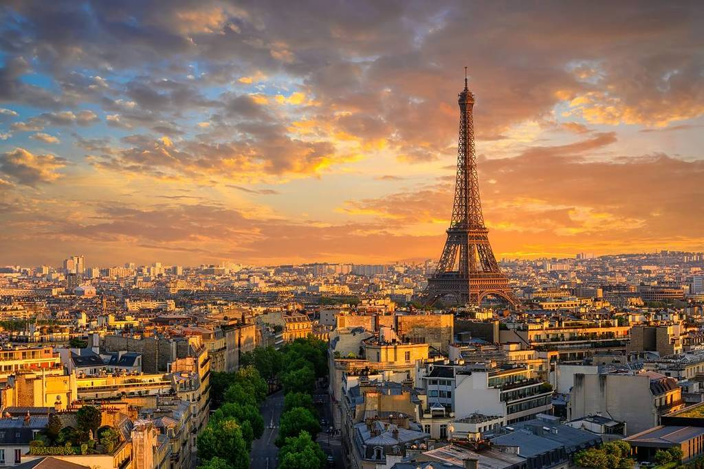

Por que viajar é tão bom para a mente e para o corpo
Viajar é muito mais do que conhecer novos lugares. É uma oportunidade de se reconectar consigo mesmo, sair da rotina e enxergar o mundo com novos olhos. Cada destino oferece uma chance de viver experiências únicas, que ampliam nossa visão de mundo, nos ensinam sobre outras culturas e despertam emoções que muitas vezes estavam adormecidas.
Quando viajamos, somos levados a sair da zona de conforto. Experimentamos sabores diferentes, ouvimos idiomas desconhecidos, nos adaptamos a novos ritmos de vida. E é nesse processo de descoberta que crescemos — como pessoas, como cidadãos do mundo. A viagem nos ensina a ter mais empatia, a respeitar o diferente e a valorizar o que temos.
Ideias de lugares a ir
Ilha Sul
- 
Paris
Bora Bora
Maui

Tahiti
Londres
Agende sua Viagem Agora
Ilha Sul
A Ilha Sul da Nova Zelândia é um verdadeiro paraíso para amantes da natureza, da aventura e da tranquilidade. Com paisagens que parecem ter saído de um filme, a ilha oferece uma variedade impressionante de montanhas nevadas, fiordes profundos, lagos cristalinos e praias selvagens. Se você está em busca de experiências inesquecíveis, este é o lugar ideal para explorar.
Paris
Paris é muito mais do que a capital da França — é um símbolo de arte, romance, elegância e história. Conhecida como a “Cidade Luz”, ela encanta milhões de visitantes todos os anos com seus monumentos icônicos, cafés charmosos, museus grandiosos e uma atmosfera única que mistura tradição e modernidade.
Bora Bora
Imagine uma ilha cercada por águas em tons inacreditáveis de azul, com bangalôs sobre o mar, montanhas tropicais e pores do sol de tirar o fôlego. Esse lugar existe — e se chama Bora Bora, um dos destinos mais desejados do mundo.
Mauí
Localizada no meio do Oceano Pacífico, Maui é a segunda maior ilha do arquipélago do Havaí, um estado dos Estados Unidos. Famosa por suas praias paradisíacas, vulcões imponentes e vegetação exuberante, a ilha combina perfeitamente natureza selvagem com cultura havaiana autêntica.
Tahiti
Localizado no coração do Pacífico Sul, o Taiti (ou Tahiti) é a maior e mais conhecida ilha da Polinésia Francesa. Com suas montanhas cobertas de vegetação tropical, praias de areia preta, cachoeiras escondidas e uma cultura ancestral vibrante, o Taiti é muito mais do que um simples destino exótico — é um lugar onde a natureza e a alma se encontram.
Londres
Londres é uma daquelas cidades que não se conhece apenas com os olhos — mas com todos os sentidos. A capital do Reino Unido mistura séculos de história com um espírito moderno, criativo e multicultural. É o tipo de destino que agrada a todos: amantes de arte, fãs de música, apaixonados por história, moda, literatura e, claro, bons viajantes.